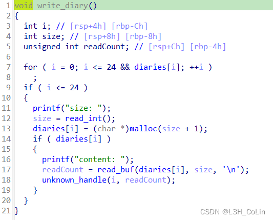
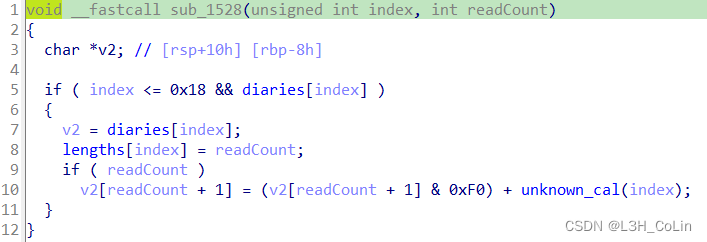
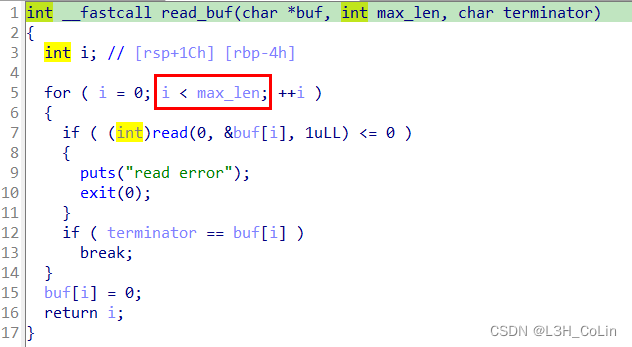
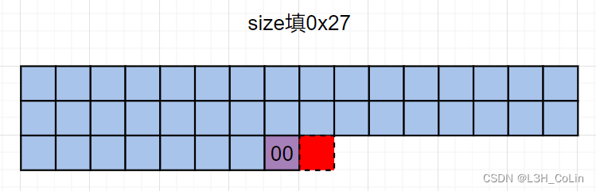
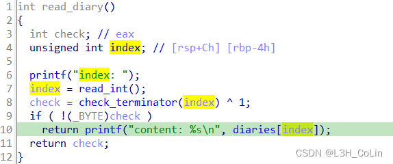
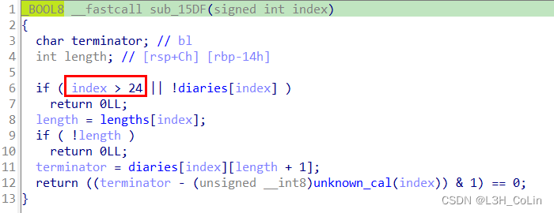
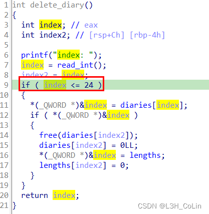
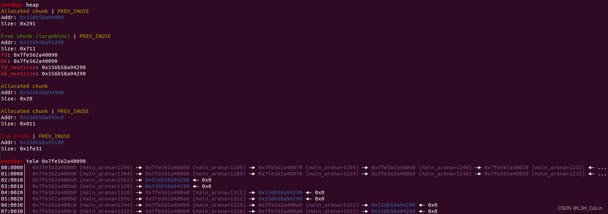
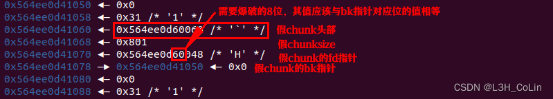
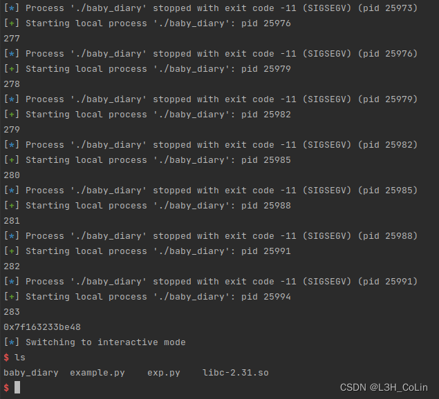

这是一道经典的堆题，可以写入、读取和删除。其中最值得研究的就是write函数最后调用的一个函数，其中涉及几个迷之计算。
Step 1: 漏洞分析

我们进入unknown_handle函数（名字是笔者自己起的）：

后面有一个unknown_cal函数，这个函数对输入的字符串进行了一系列的操作。首先将各个字符取出将它们的ASCII码全加起来保存到一个变量a中，然后循环进行下面的计算：如果a大于0xF，计算a = (a >> 4) + (a & 0xF)直到a小于0xF为止。返回到unknown_handle函数中，这里对字符串的后面一位进行了修改。但write函数一开始会要求输入size，申请的空间大小是size+1，这就需要注意read_buf这个函数了。当循环退出的时候，i的值应该就是max_len，此时后面的buf[i]=0实际上已经相对于max_len溢出了一个字节。因此unknown_handle函数中最后一条语句实际上相对于size溢出了2个字节。这可能会修改到下一个chunk的size。


本题还存在数组溢出漏洞。
请注意read函数，其中并没有对index进行检查，而在check_terminator函数中，存在有整型溢出漏洞，当index为负数时有可能通过检查。


但在数组溢出之后，想让check_terminator函数返回true并不容易，需要匹配结束符的ASCII码。
同样地，delete函数中也存在整型溢出漏洞，但如果对应地址不是有效的堆地址，就会直接报错，因此这里也不好利用：

Step 2: 确定利用方式，调试编写exp
这里需要注意unknown_handle函数时如何溢出一个字节的。在最后一条语句中，unknown_handle函数只会修改这个溢出字节的最低4位，最高4位不变。而堆管理中正常情况下所有的堆块大小都是以整0x10的形式保存的，即所有堆块的大小都是0x10的倍数。因此仅仅依靠一个字节的溢出无法达到堆块重叠的目的。
这里参考这篇文章的思路，利用large bin进行中转。当large bin中只有一个chunk时，其四个指针fd、bk、fd_nextsize、bk_nextsize有fd=bk在main_arena，fd_nextsize=bk_nextsize就是chunk自身。

当我们再一次分配到这一块内存空间时，我们就可以对这里面残留的4个指针进行改写，将其伪造成一个假chunk，这个chunk的fd指针就是原来的fd_nextsize指针，bk指针就是原来的bk_nextsize指针，将原来的bk指针改为合适的size，准备进行unlink操作。unlink操作最为关键的就是假chunk中两个指针的值，fd需要等于假chunk-0x18，bk需要等于假chunk-0x10。前面说过当large bin中仅有一个chunk时，其fd_nextsize和bk_nextsize均指向其自身，因此这里的bk不需要修改，但fd需要修改。注意：这里需要一定的爆破：由于写入时会在后面加上零字节和标志位，因此需要爆破chunk地址的其中8位，成功率为1/256：

在爆破成功之后，我们就通过unlink实现了堆块重叠，申请合适的大小就可以使得main_arena的地址可以被其他chunk所读取。
在获取libc地址后，我们还是利用堆块重叠这一特性，修改tcache的指向到__free_hook，将其改为system地址。然后释放堆块即可。
需要注意的是：假chunk头部应该写的是假chunk的地址而不应该是其他值，因为unlink_chunk函数中那个fd->bk=p || bk->fd=p这个检查中p是一个指针。因此我们还需要想办法让这里的值变成假chunk的地址。前面说过，我们通过切割large bin chunk可以获得两个地址，然后我们要改写其中一个地址。改写之后我们再一次释放这个chunk，这时这个chunk会进入到fastbin中，这就有可能会在假chunk头部写上一个有效的地址。我们只需要将这个chunk重新分配回来，修改这个地址，就有可能满足unlink的检查条件。（注意：不能让chunk进入tcache的原因是tcache chunk的bk指针实际指向tcache那个结构体，因此会破坏假chunk的结构，覆盖我们写入的size值，导致unlink在检查size时就失败）
另外，对于最初进入large bin的chunk的大小也有讲究。在第一次写假chunk信息时，我们需要写入一个size的值，而这个size的值会影响到最后的校验位。如果size的值设置得不正确，那么第一次写入和第二次写入计算出来的校验位就会不一样，这样是不可能利用成功的。因为第一次写入影响的是假chunk的fd指针，第二次写入影响的是假chunk地址本身，二者的校验位必须相等才可能使得unlink的检查通过。经过验证，这里的假chunk的size可以写0x800，但是不能写0x700、0x600等值。
exp如下，平均需要爆破约350次，这和爆破的期望不符，原因暂时不明。
1 | from pwn import * |
